Lua Console
What It Is
Lua is a small scripting language. A script is a text file of Lua commands that ends in .lua. The Lua Console runs scripts while the game runs. Scripts can read and write memory, press buttons, draw text and shapes over the game picture, and start tasks such as encoding a video. The console also has a line where you can type one Lua command and see its result at once.
A session is the list of scripts in the console, saved in a file that ends in .luases so you can open the same scripts again later.
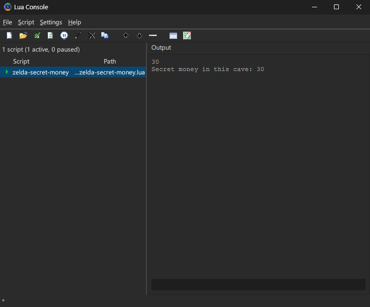
What It Is Used For
- Showing extra information over the game picture, such as a value the game hides.
- Checking a value quickly by typing one command.
- Automating tests, such as trying many inputs.
- Writing your own tools for a game.
Example, Showing the Secret Money in The Legend of Zelda
In The Legend of Zelda, some caves hold a rupee that gives Link money when he walks over it. The game does not say how much before he takes it. The script zelda-secret-money.lua reads the amount from the game's memory and draws it over the rupee. The addresses it uses were found with RAM Search and are shown in the RAM Watch example.
- Open the Tools menu and choose Lua Console.
- Choose Script, Open Script (Ctrl+O) and pick zelda-secret-money.lua. The script is added to the list and starts at once. A green arrow beside its name means it is running.
- Walk Link into a secret money cave. The script draws the amount just above the rupee until he takes it.

Each frame the script reads a few addresses and draws only when they all agree that Link is in a secret money cave and the rupee is still there. This is the part that does the work.
local function secret_amount()
if read_byte(ADDR_LEVEL) ~= 0 or read_byte(ADDR_MODE) ~= MODE_IN_CAVE then
return nil
end
local cave_type = read_byte(ADDR_CAVE_TYPE)
if cave_type < FIRST_SECRET_TYPE or cave_type > LAST_SECRET_TYPE then
return nil
end
if read_byte(ADDR_CAVE_STATE) >= STATE_TAKEN then
return nil
end
local amount = read_byte(ADDR_CAVE_AMOUNTS + MIDDLE_SLOT)
if amount == 0 then
return nil
end
return amount
end
local function draw_amount(amount)
local text = tostring(amount)
-- Centre the text on the item, a few pixels over its top.
local x = ITEM_X + ITEM_WIDTH // 2 - #text * CHAR_WIDTH // 2
gui.pixelText(x, ITEM_Y - TEXT_HEIGHT, text, TEXT_COLOR, BACK_COLOR, FONT)
end
while true do
local amount = secret_amount()
if amount then
draw_amount(amount)
end
emu.frameadvance()
endThe script runs forever in a loop. emu.frameadvance() waits for the next frame, so the loop runs once a frame. gui.pixelText() draws text over the game picture, and the drawing is cleared before each new frame, so the script draws it again every time.
Trying a Command
The line under Output runs one Lua command when you press Enter. A command that gives a value prints that value. In the picture at the top, typing memory.read_u8(0x0431, "RAM") printed 30, the amount in this cave. Typing print("Secret money in this cave: " .. memory.read_u8(0x0431, "RAM")) printed the second line. Press Up and Down in the line to go back through the commands you typed before.
How to Use It
- Open the Tools menu and choose Lua Console.
- Choose Script, Open Script and pick one or more .lua files. You can also drag .lua files onto the window. Each script starts when it is added, unless Settings, Disable Scripts on Load is on.
- Choose Script, New Script to make a new file from the template. It is added to the list and opens in your text editor.
- Double-click a script, or select it and choose Toggle (Ctrl+T), to stop it or start it again.
- Choose Script, Edit Script (Ctrl+E) to open the file in your text editor. After saving it, choose Refresh (F5) to run the new version.
- Watch the Output box for what scripts print.
- Use File, Save Session to keep the list of scripts in a .luases file. Drag a .luases file onto the window to open it.
Closing the Lua Console stops every script and empties the list and the output. If the session has a file and unsaved changes, it asks to save first.
The hotkey Toggle Last Lua Script, on the Tools tab of the Hotkeys page, starts or stops the last script you toggled.
The Window
The script list is on the left. The line above it counts the scripts and how many are active and paused. Each row shows a state icon, the script's name and its file. A green arrow means running, a pause sign means paused and a red square means stopped. Click the Script or Path heading to sort the list. Drag the right edge of the Script heading to make that column wider.
Output is on the right. It shows what scripts and typed commands print. Click a line to select it, and Shift+click to select more. Ctrl+C copies the selected lines. When a script prints too much, the console stops showing its lines and says so.
The line at the bottom names the session file. A star before it, or a star alone, means the list has changes that are not saved.
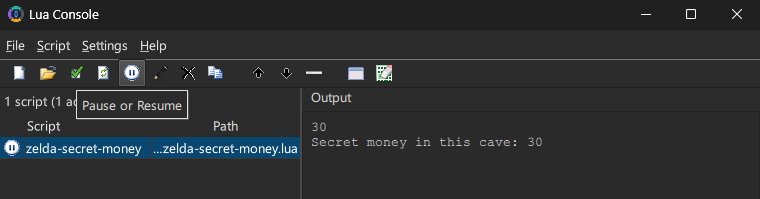
Toolbar
From left to right. Hold the pointer over a button to see its name.
| Button | What it does |
|---|---|
| New Lua Script | Makes a new script file from the template. |
| Open Script | Adds script files to the list and starts them. |
| Toggle Script | Stops the selected scripts if they run, or starts them if they are stopped. |
| Refresh | Starts the selected running scripts again from their files. |
| Pause or Resume | Pauses the selected scripts, or lets paused ones run on. |
| Edit Script | Opens the selected scripts in your text editor. |
| Remove Script | Stops the selected scripts and takes them out of the list. |
| Duplicate Script | Asks for a new file name, copies the selected script there, adds the copy and opens it in your text editor. |
| Move Up, Move Down | Move the selected rows in the list. |
| Insert Separator | Adds a separator row, a line that splits the list into groups. |
| Clear Output | Empties the Output box. |
| Erase Stale/Stuck Lua Drawing Layers | Clears drawings left over the game picture by a script that stopped. |
Menus
File
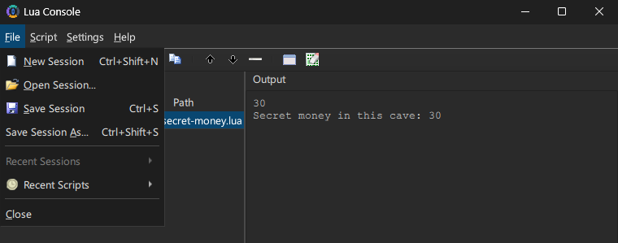
| Item | What it does |
|---|---|
| New Session (Ctrl+Shift+N) | Empties the list to start a new session. It asks to save the old one first if it has changes. |
| Open Session (Ctrl+Shift+O) | Opens a .luases file and its scripts. |
| Save Session (Ctrl+S) | Saves the list to its session file. It asks for a name if the session has no file yet. It is grey when nothing changed. |
| Save Session As (Ctrl+Shift+S) | Saves the list to a new .luases file, in the Lua folder set in Paths. |
| Recent Sessions | The session files opened or saved lately. |
| Recent Scripts | The scripts opened lately. Click one to add it and start it. |
| Close (Alt+F4) | Closes the Lua Console, which stops every script. |
Script
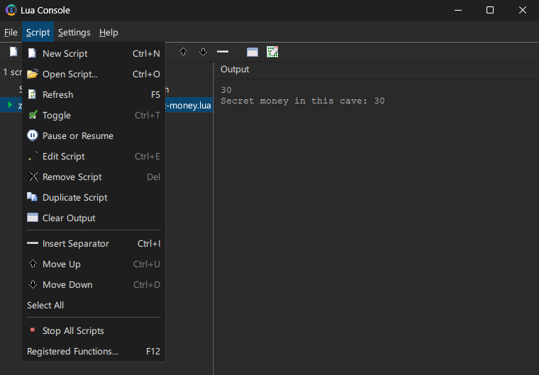
| Item | What it does |
|---|---|
| New Script (Ctrl+N) | Asks for a file name, makes the file from the template .template.lua in the Lua folder, adds it to the list without starting it, and opens it in your text editor. |
| Open Script (Ctrl+O) | Adds one or more .lua files and starts them. A script already in the list is started if it is stopped. |
| Refresh (F5) | Starts the selected running scripts again from their files, so changes you saved take effect. |
| Toggle (Ctrl+T) | Starts or stops the selected scripts. With nothing selected it works on every script if Toggle All if None Selected is on. |
| Pause or Resume | Pauses the selected scripts, or lets paused ones run on. |
| Edit Script (Ctrl+E) | Opens the selected scripts in the text editor your system uses for .lua files. |
| Remove Script (Delete) | Stops the selected scripts and takes them out of the list. The files are not deleted. |
| Duplicate Script | Copies the selected script to a new file and adds the copy. A separator is copied at once. |
| Clear Output | Empties the Output box. |
| Insert Separator (Ctrl+I) | Adds a separator row above the first selected row, or at the end. |
| Move Up (Ctrl+U), Move Down (Ctrl+D) | Move the selected rows. |
| Select All (Ctrl+A) | Selects every row. |
| Stop All Scripts | Stops every script in the list. |
| Registered Functions (F12) | Opens the Active Registered Functions window. |
Settings
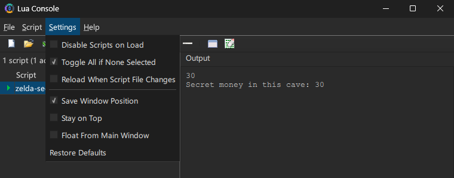
| Item | What it does |
|---|---|
| Disable Scripts on Load | Adds scripts to the list without starting them, when you open a script or a session. Off at first. |
| Toggle All if None Selected | Makes Toggle and Refresh work on every script when no script is selected. On at first. |
| Reload When Script File Changes | Starts a running script again when its file is saved. The console looks at the files twice a second. Off at first. |
| Save Window Position | Opens the Lua Console where it was left, at the same size. |
| Stay on Top | Keeps the Lua Console above other windows. Shown only where the system allows it. |
| Float From Main Window | Makes the Lua Console a window of its own. When it is off, it belongs to the main window, stays above it and is minimized with it. |
| Restore Defaults | Turns Disable Scripts on Load and Reload When Script File Changes off and Toggle All if None Selected on, and resets the window settings. |
Help
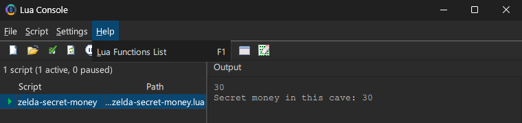
Lua Functions List (F1) opens the Lua Functions window.
Right-Click Menus
On a Script
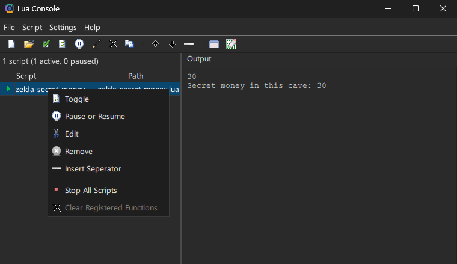
| Item | What it does |
|---|---|
| Toggle | Starts or stops the script. |
| Pause or Resume | Pauses the script, or lets it run on. |
| Edit | Opens the script in your text editor. |
| Remove | Stops the script and takes it out of the list. |
| Insert Separator | Adds a separator row. The menu spells it Insert Seperator. |
| Stop All Scripts | Shown only while a script runs or is paused. Stops every script. |
| Clear Registered Functions | Removes every registered function of every script. |
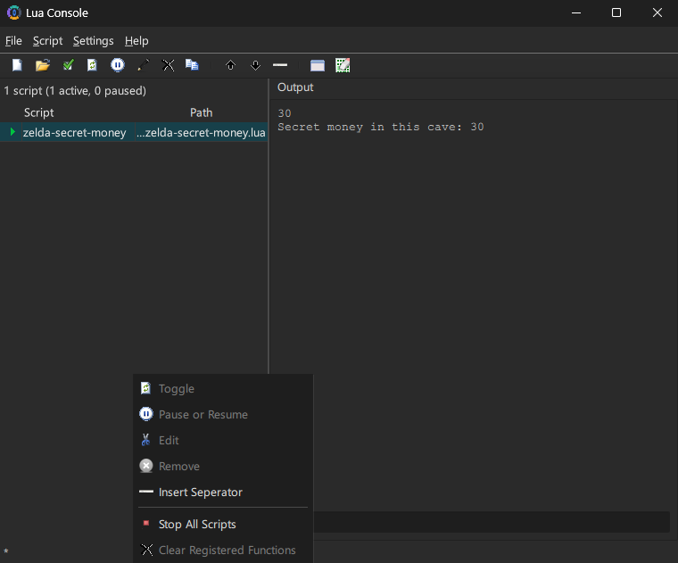
On the Output Box
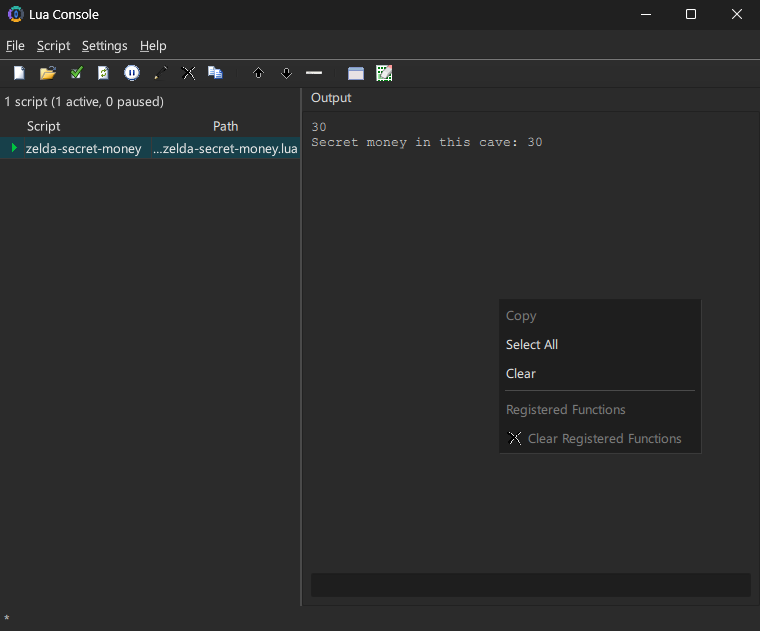
| Item | What it does |
|---|---|
| Copy | Copies the selected output lines. |
| Select All | Selects every output line. |
| Clear | Empties the Output box. |
| Registered Functions | Opens the Active Registered Functions window when a function is registered. |
| Clear Registered Functions | Removes every registered function. |
Windows That the Lua Console Opens
Lua Functions
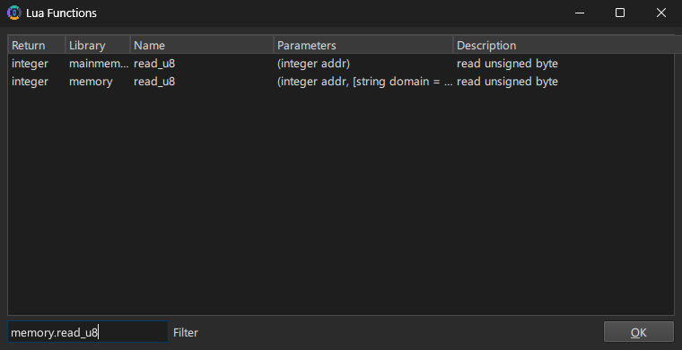
This window lists every function a script can call, with what it returns, its library, its name, its parameters and what it does. A library is a group of functions, such as memory, gui or emu. Type in the box beside Filter to show only functions whose name or description holds that text. Click a column heading to sort by it. Hold the pointer over a row to read the whole description.
Right-click a row and choose Copy, or select it and press Ctrl+C, to copy the call and its example to the clipboard. Functions marked [Not available] cannot be used in this window, and ones marked [Deprecated] are old and may go away. OK closes the window.
Active Registered Functions
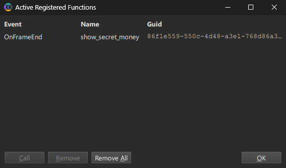
A script can register a function, which means asking Chimera to call it when something happens, such as the end of every frame. This window lists those functions with their event, their name and their Guid, a unique id Chimera gives each one. The function in the picture was added by typing event.onframeend(function() end, "show_secret_money") into the command line.
| Button | What it does |
|---|---|
| Call | Runs the selected function once. Double-click a row or press Enter to do the same. |
| Remove | Removes the selected function. The Delete key does the same. |
| Remove All | Removes every registered function. |
| OK | Closes the window. |
The example script does not register functions. It uses a loop with emu.frameadvance() instead, so its list is empty.
Related Settings
The Customize option Run lua scripts when turboing decides if scripts keep running at turbo speed. See Customize. The Lua folder set in Paths is where Open Script, New Script and the session files start.